其实编译就是转换语言的表达式和处理。
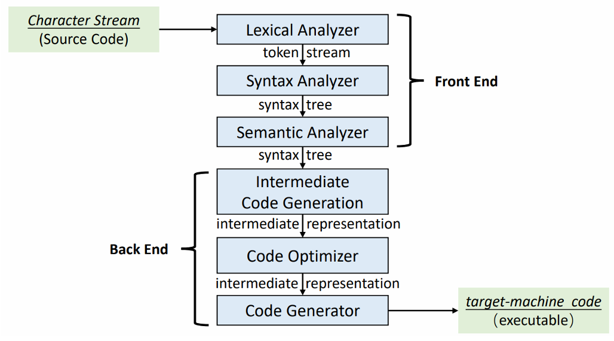
上图是编译的整个流程，一共有六个步骤：词法分析、语法分析、语义分析、中间代码生成、代码优化、目标代码生成。可以分成前端和后端。
输入：
- Character Stream（源代码）：原始的程序文本，字符流形式。
前端：负责分析和理解源代码，通常与语言无关的部分分离。
走完前端流程之后，机器就可以懂得你的代码了。
- Lexical Analyzer（词法分析器）
- 输入：字符流
- 输出：token 流（词法单元，比如标识符、关键字等）
- 功能：进行词法分析，将字符转化为有意义的词素。
- Syntax Analyzer（语法分析器）
- 输入：token 流
- 输出：语法树（Syntax Tree）
- 功能：根据语言的文法，构建程序结构的树状表示，检查语法是否正确。
- Semantic Analyzer（语义分析器）
- 输入：语法树
- 输出：语法树（带有语义信息）
- 功能：进行语义检查，比如类型检查、作用域检查。
后端：负责生成、优化和输出目标代码
主要是优化代码。
- Intermediate Code Generation（中间代码生成）
- 输入：语义树
- 输出：中间表示（IR）
- 功能：生成一种抽象机器语言，方便移植和优化。
- Code Optimizer（代码优化器）
- 输入：中间表示
- 输出：优化后的中间表示
- 功能：提升效率、减少冗余，比如常量合并、死代码删除。
- Code Generator（代码生成器）
- 输入：优化后的中间代码
- 输出：目标代码（Target-machine Code）
- 功能：翻译成具体机器架构可以执行的指令。
输出：
- target-machine code（可执行文件）：最终的机器代码，可以直接运行。
词法分析
重点：给定 RE 构造 NFA ，NFA 转 DFA，DFA 最小化（必考）。token, lexeme 的区别，字母表 串 语言的定义，RE 的一些运算，给定语言叫你写 RE。
词法分析 是识别子串（词素）并生成词法单元（token）的过程。
把源代码当作字符串，分割出有意义的片段，判断每个片段属于哪一类（关键字、标识符、符号等）。
词法单元 (Token) & 词素 (lexeme)
Token：
- 是语言中最小的意义单位。
- 是一个元组，表示一个类别（class）和一个具体的值（lexeme），例如：
Token = (class, lexeme)- 如
(keyword, "while")、(id, "x")、(number, "42")
- Token name（class） 就是分类的名字，比如 keyword、id、number、operator。
Lexeme（词素）：
- 代码中存在的词。
- 是 token 的具体实例。
- 比如在源代码中写了
while，这是一个词素，对应的 token 是(keyword, "while")。
词法分析就是把将输入字符串划分为一系列 token（词法单元）。
问题：如何判断一个字符串属于哪个 token class？
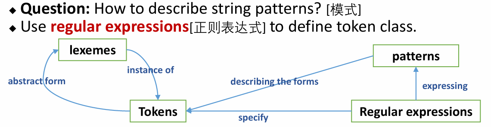
可以使用正则表达式。
| Token Class（类别） | Pattern（模式） | 解释 |
|---|---|---|
| identifier（标识符） | [a-zA-Z_][a-zA-Z0-9_]* | 首字符是字母或下划线，后面跟字母或数字 |
| integer（整数） | [0-9]+ | 至少一个数字 |
语言定义
Alphabet（字母表）
- 是一个有限符号集合
- 每个符号是构成字符串的基本单位
- 例如：
{0, 1}：二进制，{a, b, c}：英文小写，ASCII字符集
String（字符串）
- 是一个由字母表中的符号组成的有限序列
- 例如：
"abc"是长度为 3 的字符串（|abc| = 3），ε表示空串（长度为 0）
Language（语言）
- 语言 = 某个给定字母表上一个任意的可数的串集合
- 语言是所有可能串的子集
举例：
- 若 Σ = {a, b}，可能的语言有：
{ab, ba}，{a, aa, aaa, ...}，∅（空集），{ε}（仅包含空串）
注意：
∅ ≠ {ε}∅是什么都不包含{ε}是包含一个元素：空串
语言运算
一共有 并、连接、闭包 三种操作。
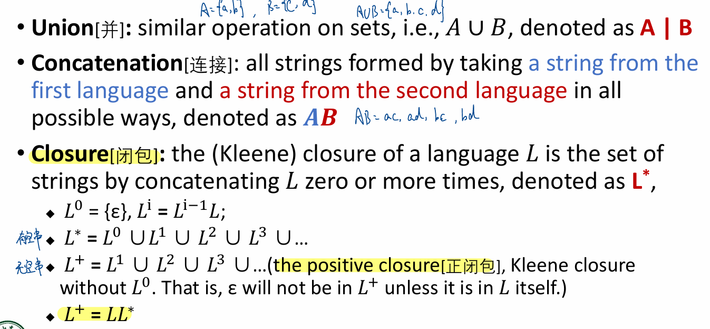
以下有一些例子：
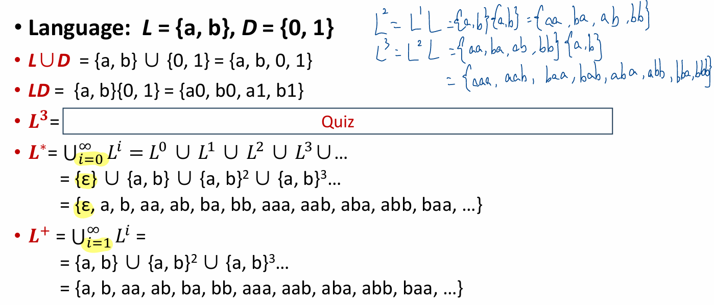
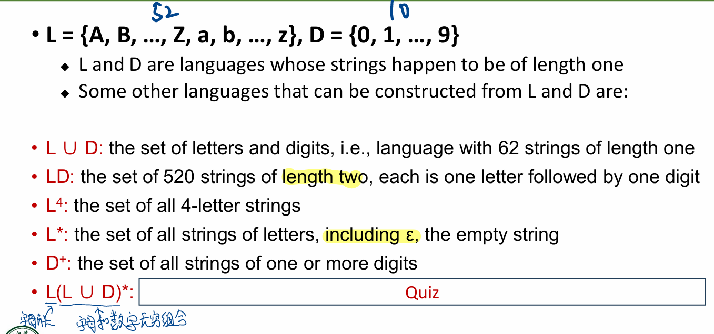
构建正则表达式
正则表达式是递归定义的，从最基本的单位（原子）开始。
r表示的是一个正则表达式 - 是你写出来的“形式”，例如：a|b、(a*b)*c
L(r)表示的是这个正则表达式所代表的语言 - 是一个集合，包含所有能够被正则表达式r匹配的字符串 - 所以L(r)是一个集合，而不是一个字符串
Atomic 表达式有三种基本形式：
| 正则表达式 | 对应语言 L(r) | 含义解释 |
|---|---|---|
ε | L(ε) = {""} | 匹配空串（长度为 0 的字符串） |
a | L(a) = {"a"} | 匹配单个字符 a |
∅ | L(∅) = {}（空集合） | 不匹配任何字符串 |
注意：∅ 和 ε 是不同的：
L(ε)有一个元素：空串。L(∅)是空集合，没有任何元素。- 所以：
size(L(∅)) = 0,size(L(ε)) = 1,length(ε) = 0
在原子的基础上，我们可以用运算符递归地构造更复杂的正则表达式。
假设 r 和 s 是正则表达式，表示语言 L(r) 和 L(s)：
| 正则表达式 | 含义说明 |
|---|---|
(r) | 加括号不影响含义，(r) ≡ r |
(r)|(s) | L(r) ∪ L(s)，即并 |
(r)(s) | 表示 L(r)L(s)，即连接 |
(r)* | 表示 L(r)*，即Kleene 闭包 |
例子：
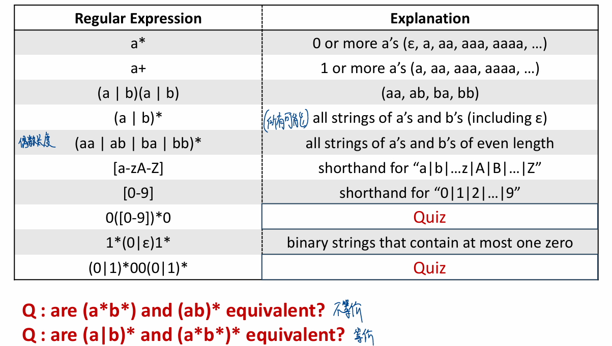
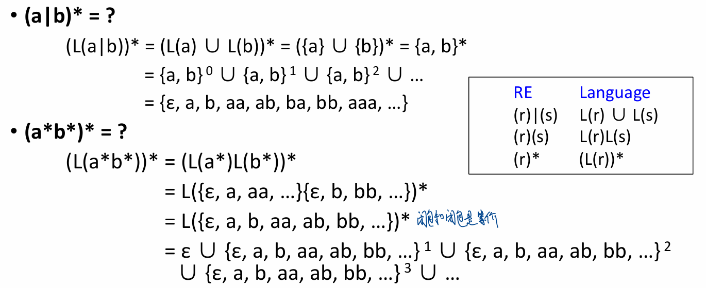
正则表达式只是描述语言的工具，它告诉我们“什么样的字符串是合法的”，但它本身不能识别字符串。
正则表达式 → 语言的描述（L(r))
有限自动机 → 语言的识别器（是否属于 L(r)）
RE 题目
还有Quiz 1.2, Asg.1 (2)(3)(4)都可以刷
- ppt 例题
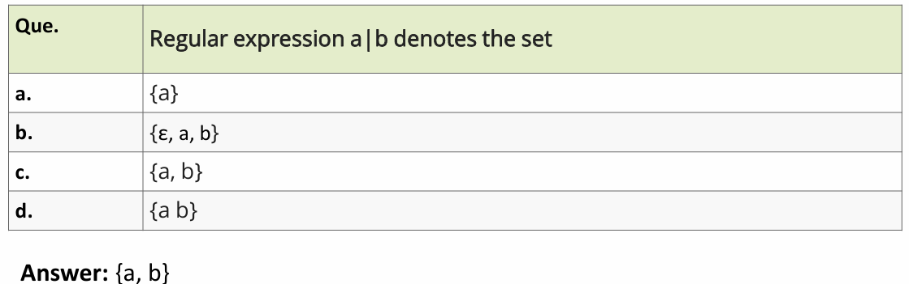
- ppt 例题
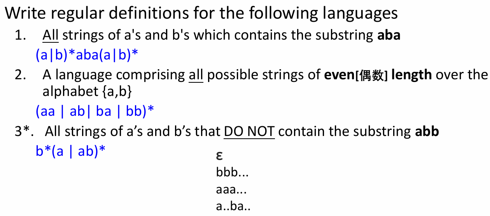
有穷自动机 FA
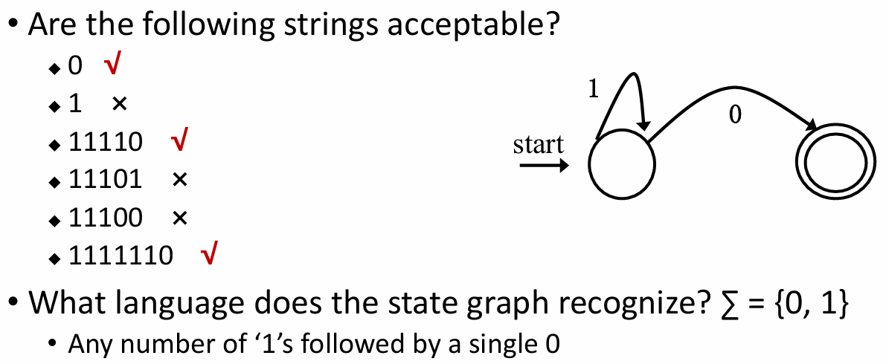
自动机其实就是状态转换。
正则表达式只是定义了正确的语言，但是不能实现检测。
需要使用 FA 来检测，FA 分成 NFA (非确定的有穷自动机) 和 DFA (确定的有穷自动机） 。
| 特性 | DFA（确定） | NFA（非确定） |
|---|---|---|
| 状态数 | 任意时刻只能在一个状态 | 同时可以在多个状态 |
| 输入转移 | 每个状态对每个输入最多一条转移 | 每个状态对同一个输入可多条转移 |
| ε-move（ε 转移） | 不允许 | 允许 |
| 接受条件 | 唯一一条路径接受 | 只要有一条路径接受就接受 |
| 图中路径 | only one path | some of these paths |
- NFA：
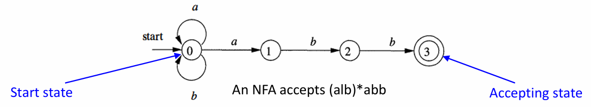
- DFA：
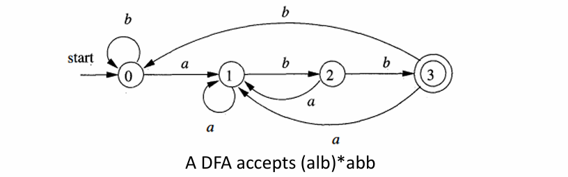
汤普森构造法（RE to NFA）
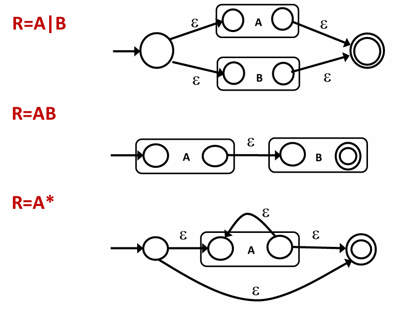
示例如下：
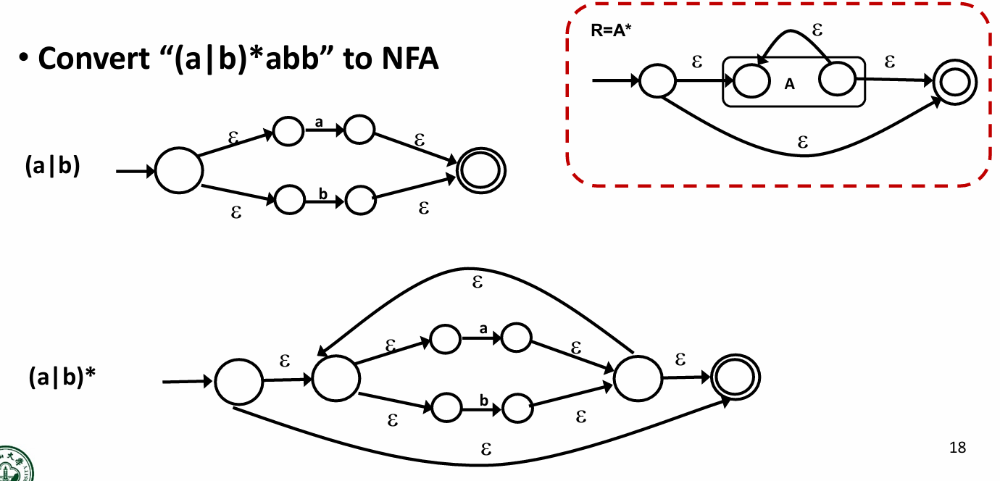
L(NFA) ≡ L(DFA)
NFA 和 DFA 能识别的语言是完全一样的，都是正则语言
- 任意一个 NFA，都可以转换成一个 DFA，使得两者识别的是相同的语言。
子集构造法（NFA to DFA）
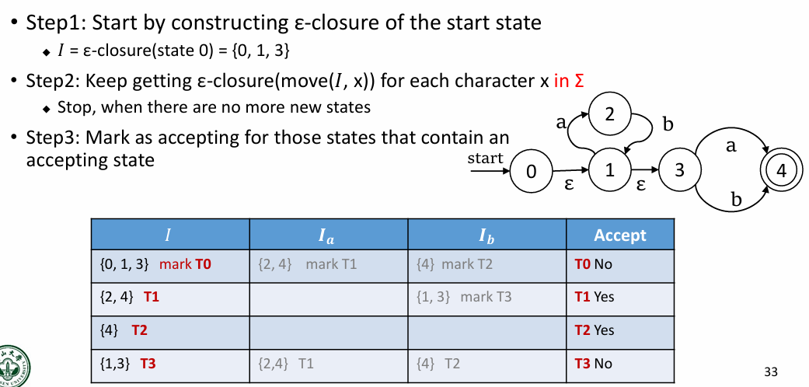
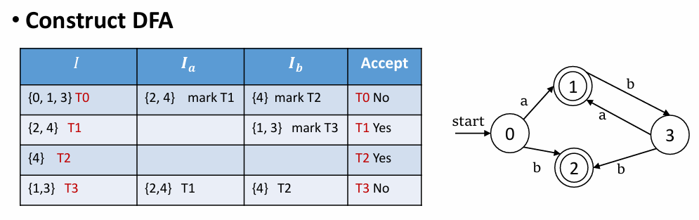
分区算法（最小化 DFA 状态数）
算法步骤如下：
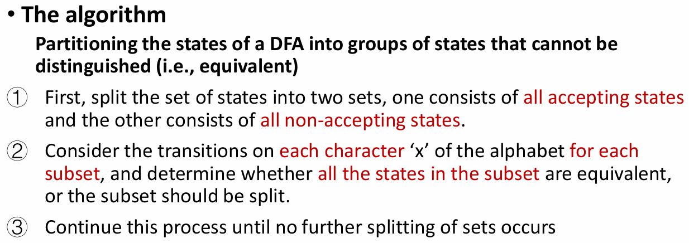
简单示例：
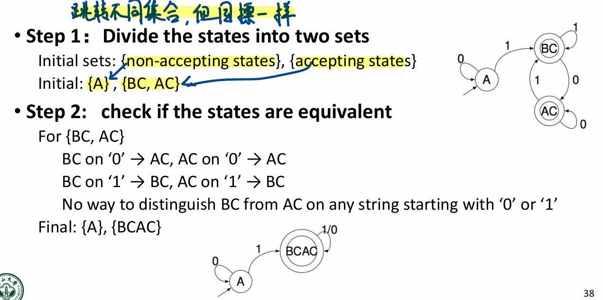
复杂示例：
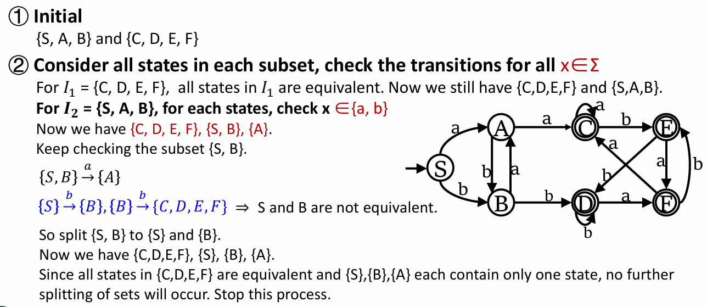
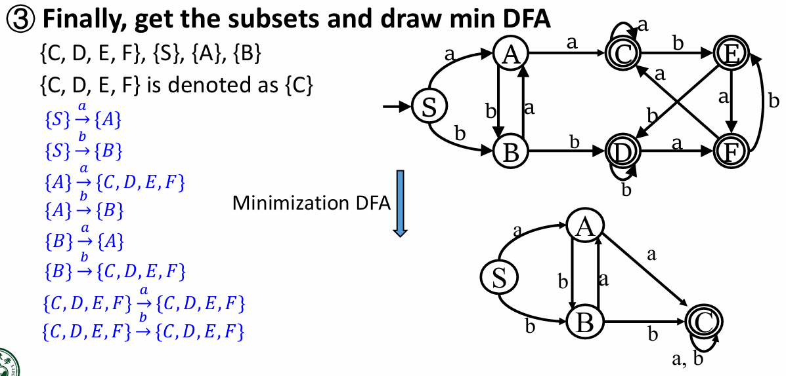
其他示例：
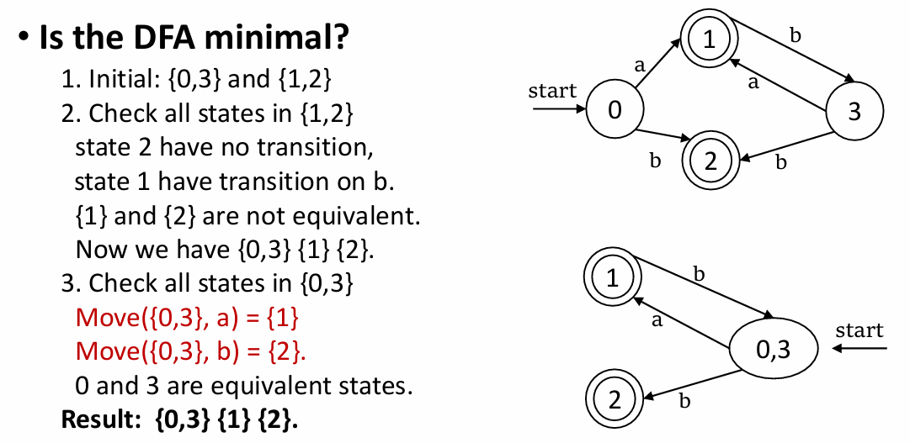
正则语言的局限性
正则语言表达不了以下内容：
L = { aⁿ b aⁿ | n ≥ 0 }这些语言的特点是：需要记住有多少个 a，然后在之后匹配相同数量的 a 或 b。
因为有限自动机没有“记忆”能力
- 它不能“数”有几个 a
- 它不能“记住”之前看到的内容数量
- 所以它无法判断“前后 a 的个数是否一致”
所以 a*ba* 虽然匹配了类似的结构，但它不能保证前后的 a 数量一致，所以是错误的。
- 括号匹配不是正则，
if - else嵌套的也不是。
FA 题目
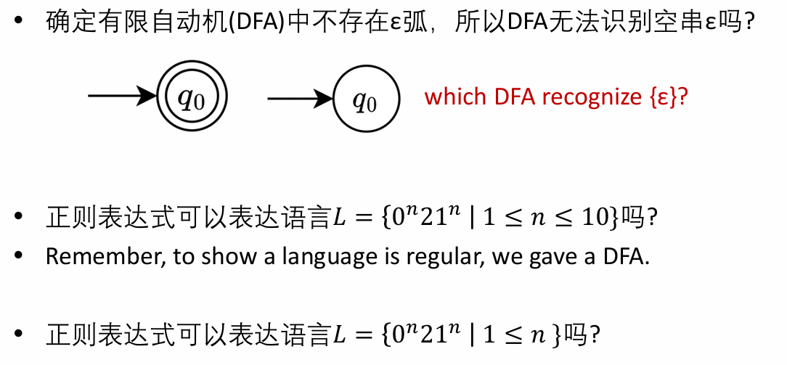
第一个问题是可以的，左边就是答案。
第二个是可以的，虽然没有记忆，但是 n 是有限的，枚举就可以。
第三个不行。
语法分析
重点：二义性（最左和最右推导有两棵树，文法二义，语言未必二义），乔姆斯基文法体系（要会判断什么文法），上下文无关文法的句子句型定义，first 和 follow 集合，LL(1)，LR(0)，SLR(1)，LALR(1)，LR(1)这些一定要会。
语法分析器输入是 Token 流，输出是一棵语法分析树（根据语法规则生成的）。
语法分析验证 Token 是否满足源语言的规则。
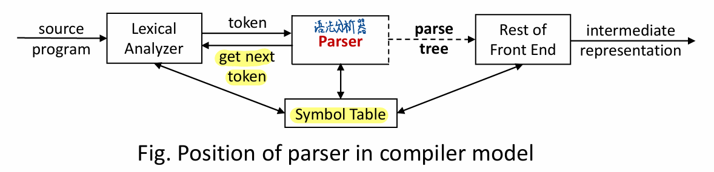
语言大致上可以分成下表的两种：
| 类型 | 特点 |
|---|---|
| 自然语言（如中文、英语） | 模糊、多义、对人友好、人能理解 |
| 形式语言（Formal Language） | 精确、规则、可被计算机处理，用于程序语言 |
一种形式语言可以用以下三种方式之一来定义：
- Regular Expressions（正则表达式）
- 用于简单结构，如词法（token）层次
- Finite Automata（有限自动机）
- 正则语言的机器模型实现
- Grammars（文法）
- 用于更复杂结构（语法分析）
文法可以表达一些 正则和FA 表达不了的语法，文法更加强大（所有能够被正则表达的都可以被文法表达）
文法
形式文法（Grammar）通常记为：$G = (V_T, V_N, S, \delta)$。
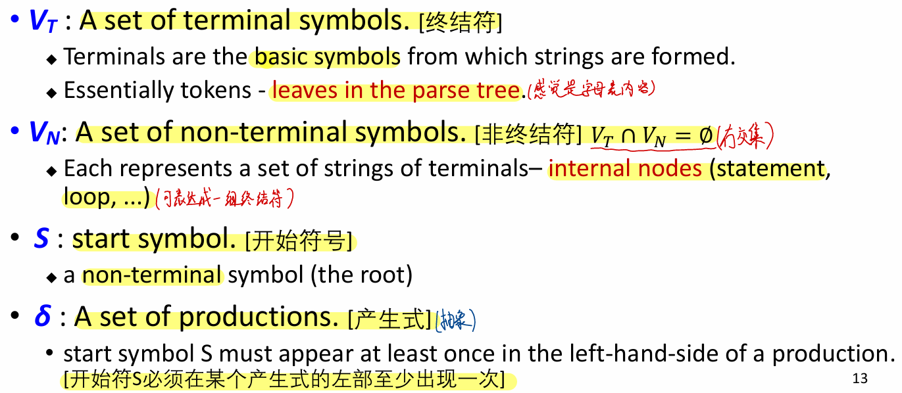
The symbol → is used in place of the arrow. [读作“定义为”]
示例如下：
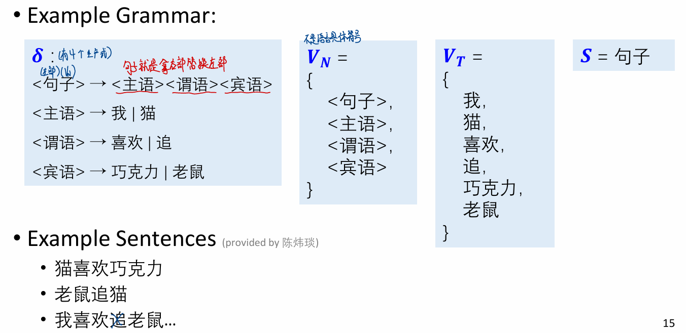
上下文无关文法
其实就是在上面文法的基础定义上，限制产生式的左部只能有一个非终结符。
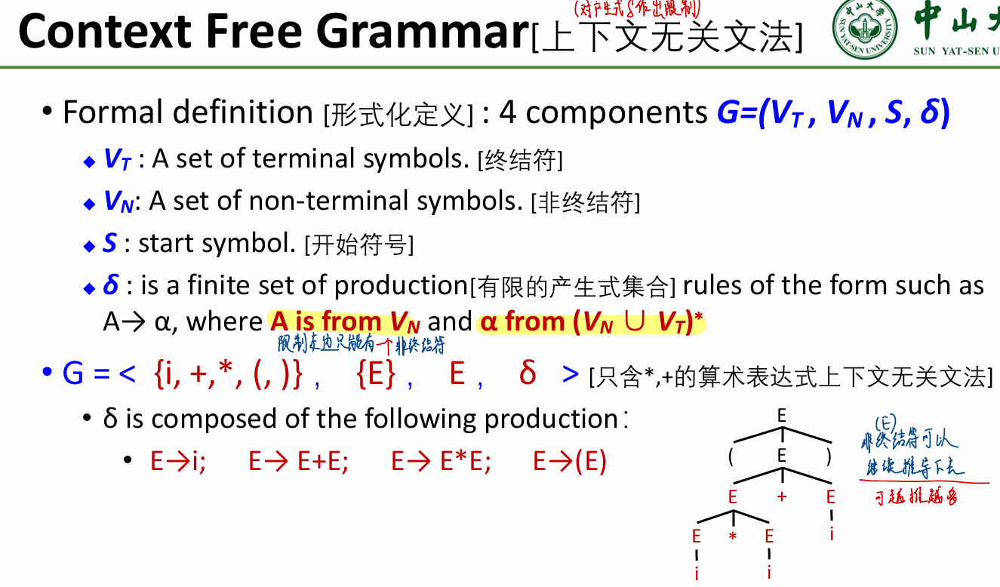
简单示例：
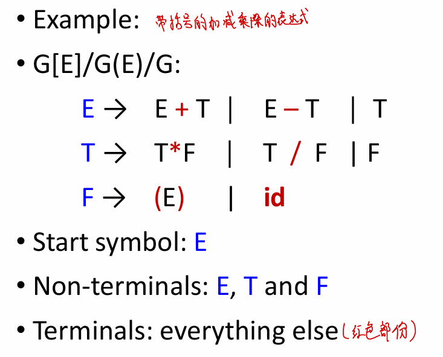
文法上的约定
可能会考如何判断 终结符、非终结符、开始符号。
记得空串不是终结符！
正常来说，一个文法只需要写 产生式 部分即可：
第一个产生式的头是开始符号。
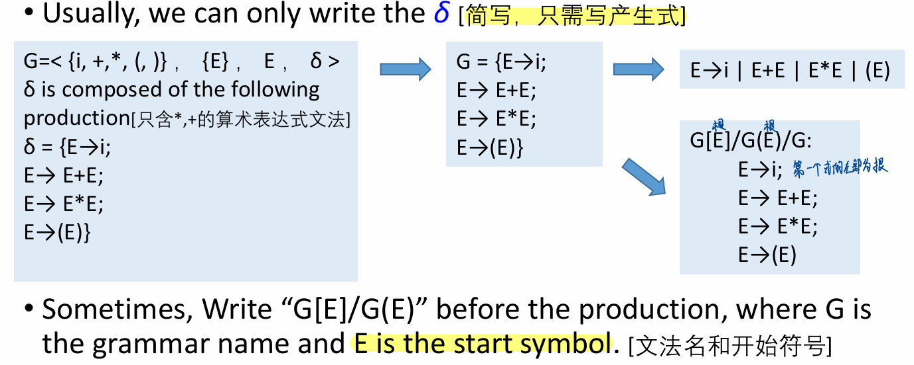
一些约定：
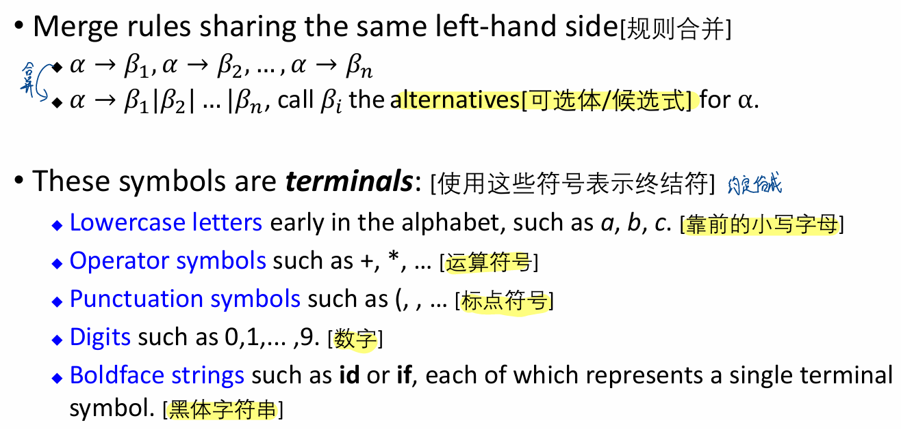
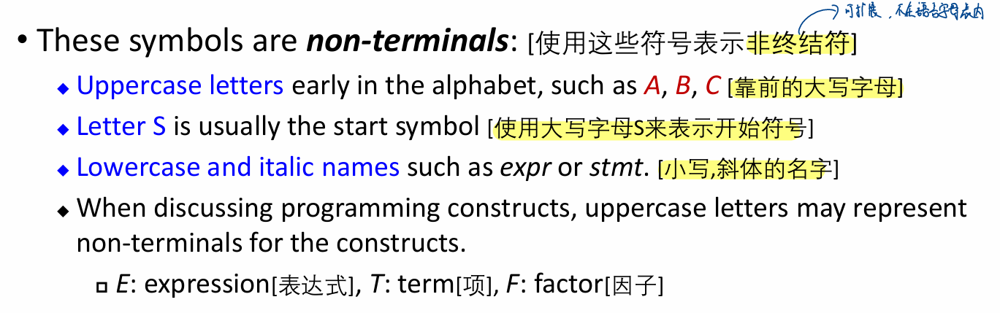
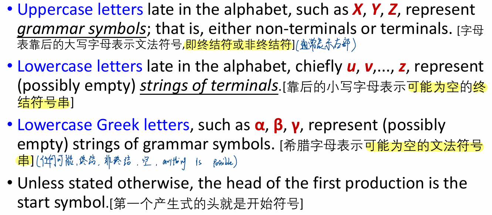
推导规则
产生式规则
形式为：$A \rightarrow \alpha$
- 意思是：非终结符 A 可以被替换为字符串 α
- 这个替换称为一步推导
推导定义
推导 = 多次连续应用产生式，逐步替换非终结符
举例：$\alpha A \beta \Rightarrow \alpha \gamma \beta \quad \text{(因为 } A \rightarrow \gamma)$
那么：
⇒表示一步推导αAβ ⇒ αγβ表示：在中间把A替换成γ
推导符号说明
| 符号 | 解释 |
|---|---|
⇒ | 一步推导 |
⇒* | 零步或多步推导 |
⇒+ | 一步或多步推导 |
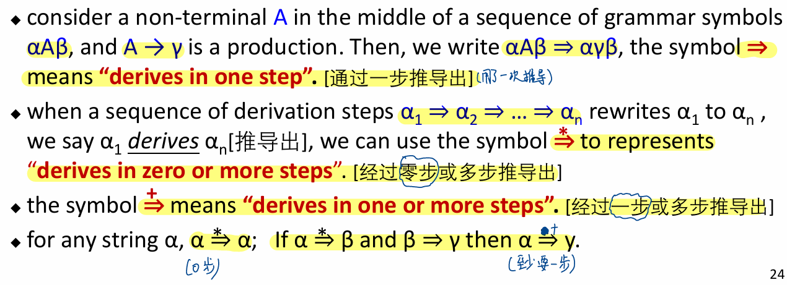
句型、句子、语言
Sentential Form（句型）
- 如果 $S \Rightarrow^* \alpha$，其中 $S$ 是文法的开始符号，那么 $\alpha$ 是一个 句型。
- 句型可以：
- 包含 终结符 和 非终结符
- 是中间推导过程的任何结果
- 可以为空串 ε
- 句子和开始符号也是
Sentence（句子）
- 一个句型中不再包含非终结符，就叫句子。
- 换句话说：句子是完全推导完毕的结果，只由终结符组成
Language（语言）
- 一个文法 $G$ 所能推导出所有“句子”组成的集合，就是它的语言：
$$ L(G) = \{ w \mid S \Rightarrow^* w,\ w \in V_T^* \} $$
所有能从开始符号 S 推导出、并且只含终结符的串 $w$，都属于语言 $L(G)$。 我的理解是这里的句子有点像串。语言就是串的集合。
示例如下：
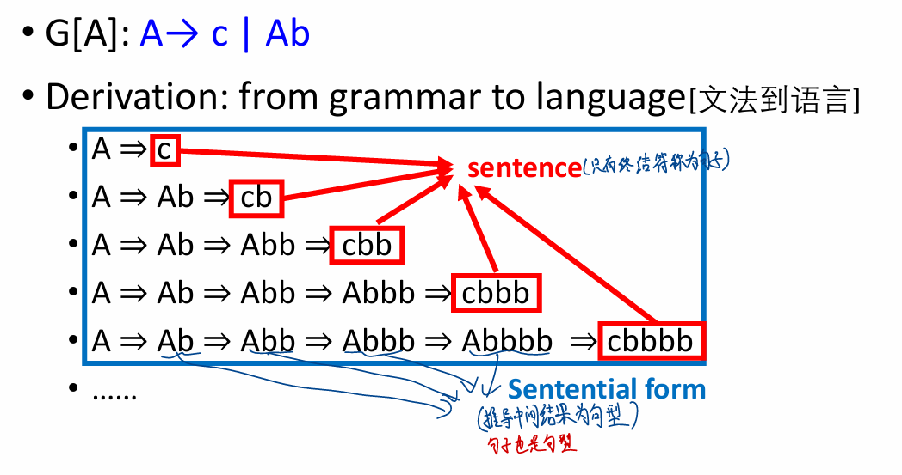
文法推导
在每一次推导中，都需要去想选择哪个非终结符来换以及使用哪个产生式来进行更换。
为了解决第一个问题，所以有 最左推导 和 最右推导。
就是每次都选择 最左/最右 的非终结符进行更换。
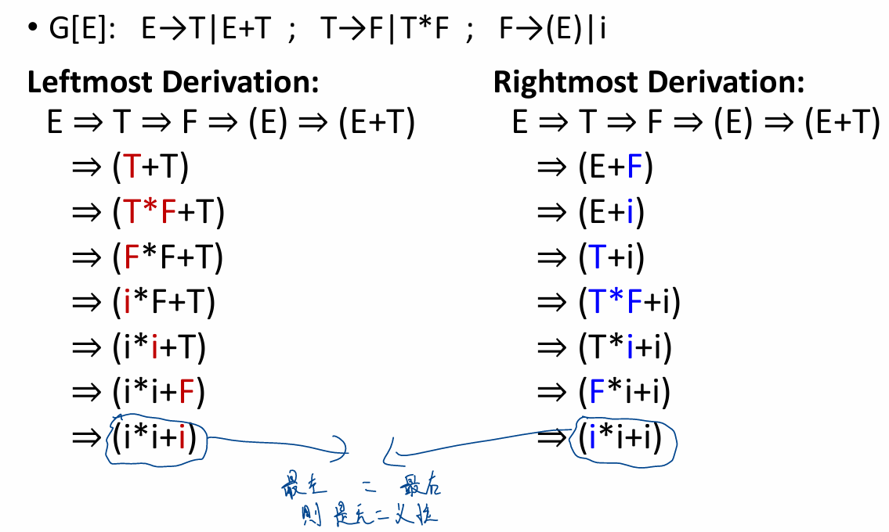
判断二义性的方法：最左推导的语法树和最右推导的语法树是同一棵。
分析树 Parse tree
Parse Tree:
- 它是推导过程的图形表示。
- 作用是：表示一个句型是如何一步一步地由产生式推导出来的。
- 但不关注推导顺序（是左推、右推）。
多个不同推导过程可能产生 相同的分析树。
分析树结构的组成：
内部结点
- 表示应用的产生式的左部，即非终结符号。
- 内部结点的子结点代表产生式右部。
叶子结点
- 是终结符（或尚未替换的非终结符）。
- 产出（yield）：从左往右读所有叶子节点，得到一个句型（还未推导完分析树）。
- 如果所有叶子都是终结符，是一个句子。
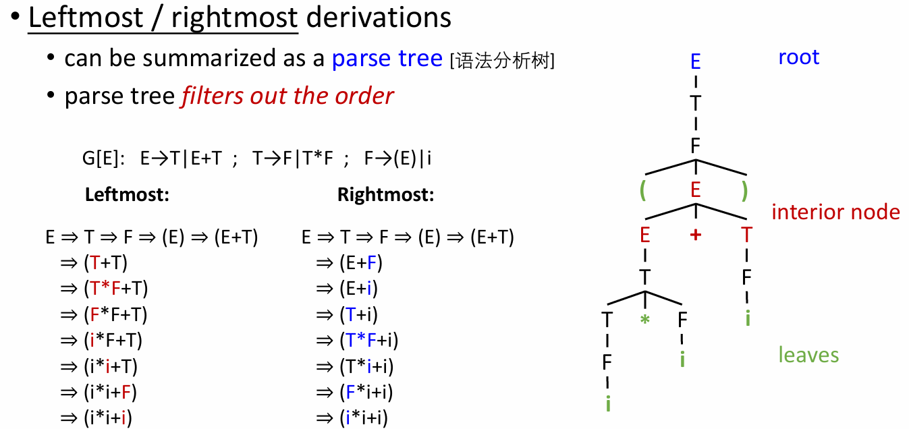
二义性
文法的二义性
如果一个句子对应多个语法分析树，则说明这个文法是二义的。
- 某个文法
G对同一个句子w，能推导出两棵不同的语法树，意味着这个G是二义性的。
语言的二义性
- 一个语言
L是二义的，指的是：对这个语言的所有文法来说，全都是二义文法。 - 也就是说，不存在一个无二义性的文法来描述该语言。
- 如果能找到一个无二义性的文法来描述语言
L，则L是无二义语言。
关系对比
| 概念 | 定义 | 是否说明语言有问题 |
|---|---|---|
| 文法的二义性 | 某个句子有多棵语法树 | ❌ 不一定，可能只是文法设计不好 |
| 语言的二义性 | 所有描述它的文法都是二义的 | ✅ 是语言本身的问题 |
可以通过指定优先级和结合性来消除二义性。（同种符号间考虑结合性，不同符号考虑优先级）
乔姆斯基文法体系
给出一个文法要会分是第几类。
将形式文法按照表达能力的强弱分为四类（Type 0 到 Type 3）：
| 类型 | 名 | 中文 |
|---|---|---|
| Type 0 | 无限制文法 | 最强表达能力，没有限制 |
| Type 1 | 上下文有关文法 | 可描述长度不减的语言 |
| Type 2 | 上下文无关文法 | 常用于编程语言语法 |
| Type 3 | 正则文法 | 最弱表达能力，可被正则表达式/有限自动机识别 |
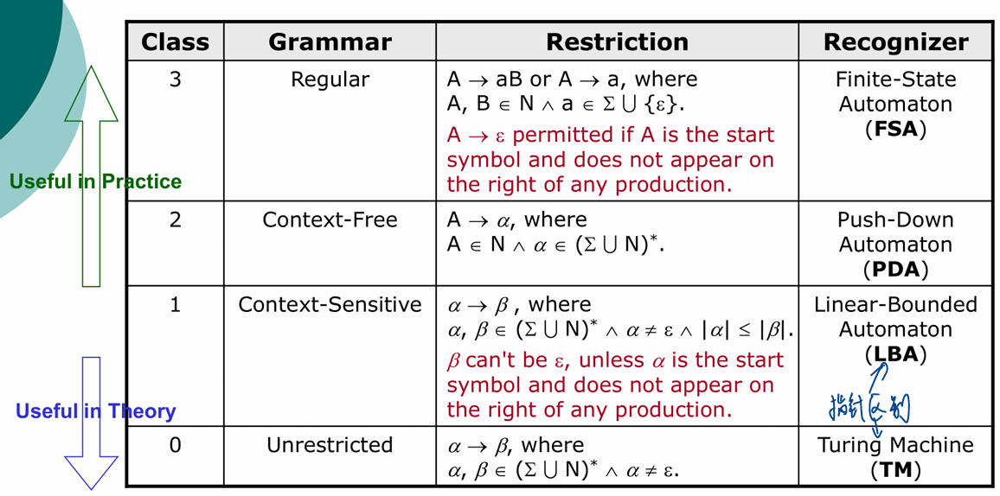
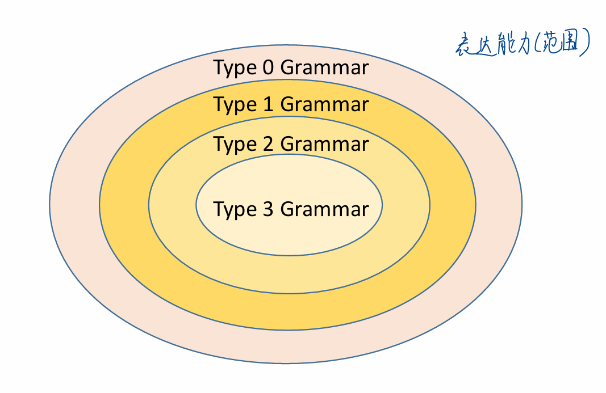
上下文有关文法不可以推出空串！其他都可以
正则文法左递归也行右递归也行。
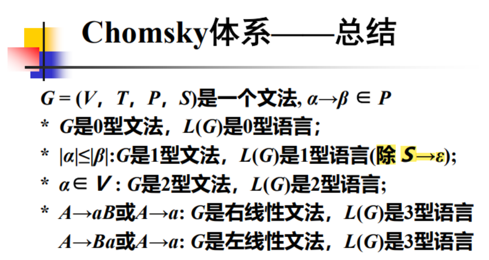
例子1：S → aSb | ε Type 2
例子2：aAb → abb Type1
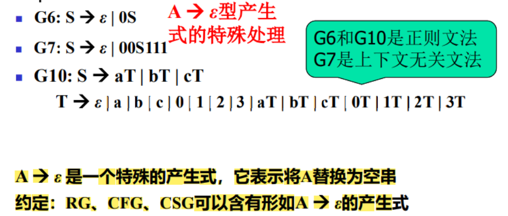
语法分析类型
可以分成 自顶向下 和 自底向上。
自顶向下分析
- 从 根节点 开始，向下构造到叶子节点（终结符）。
- 构造的是 最左推导。
- 但对 回溯 或 左递归文法 敏感，难以处理某些复杂语法。
自底向上分析
- 从 输入串的叶子 开始，逐步向上还原成根。
- 实际是构造 最右推导的逆过程（最左归约）。
- 每一步做的是 规约：将已识别的部分归约成某个非终结符。
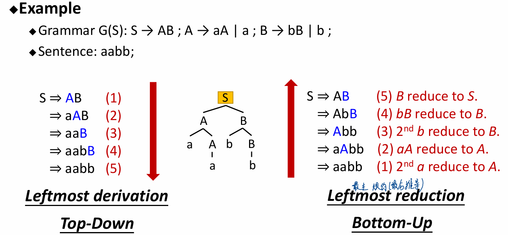
自顶向下分析
RDP 递归下降分析
- 为文法中每个非终结符定义一个过程。
- 起始于 start symbol 对应的过程，逐步递归调用其他过程；
- 每次执行一个产生式形如
A → X₁X₂…Xₖ： - 如果
Xᵢ是非终结符，则调用对应过程。 - 如果
Xᵢ是终结符，尝试匹配当前输入符号。 - 若失败，则报错或进行回溯。
回溯
- 产生式选择不明确时，需要尝试所有候选产生式。
- 匹配可能是暂时成功的，后续失败时需要回溯（Backtracking）。
- 输入：
S → xAy，A → ** | *，输入串为x*y。 - 若先选择
A → **，中途失败。 - 则回溯，改为尝试
A → *。 - 最终成功匹配
x*y。
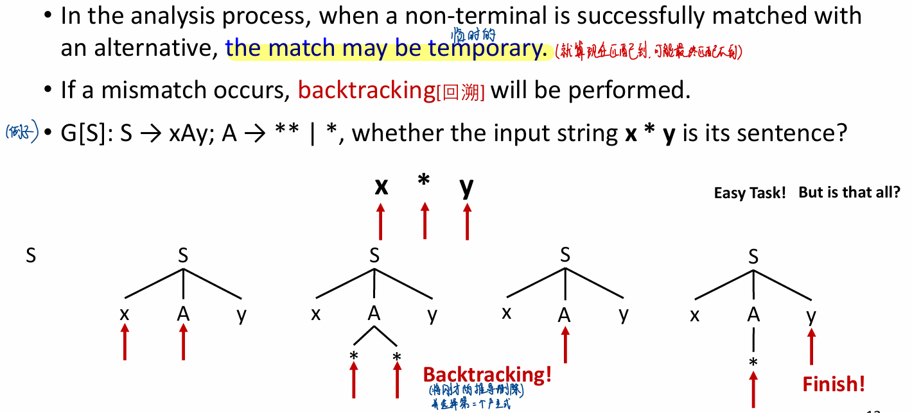
左递归问题（重点）
若某个非终结符 A存在推导 A ⇒⁺ Aα（即 A 能通过一系列推导再回到自身），称该文法是 左递归 的。
自顶向下分析是处理不了左递归的（最左推导）。
直接左递归消除：
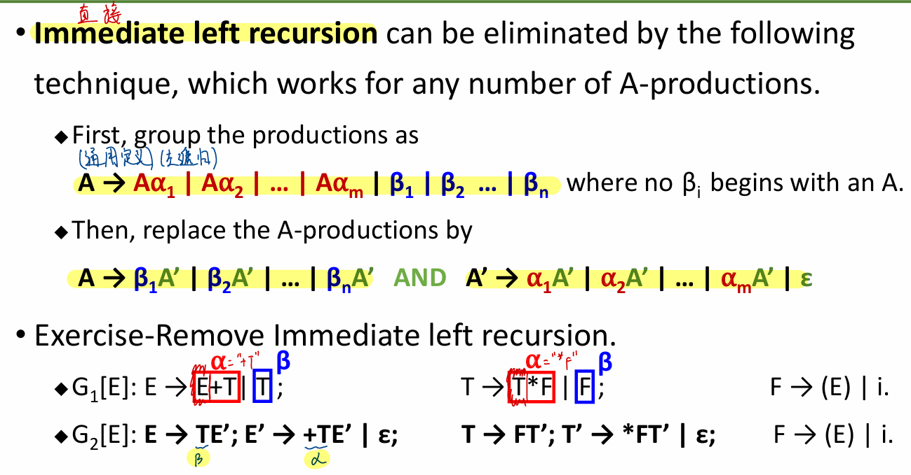
间接左递归消除：
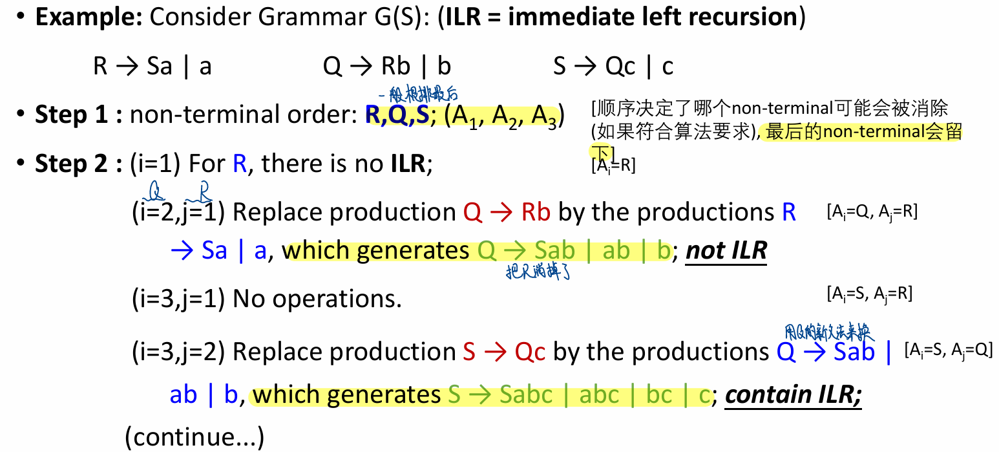
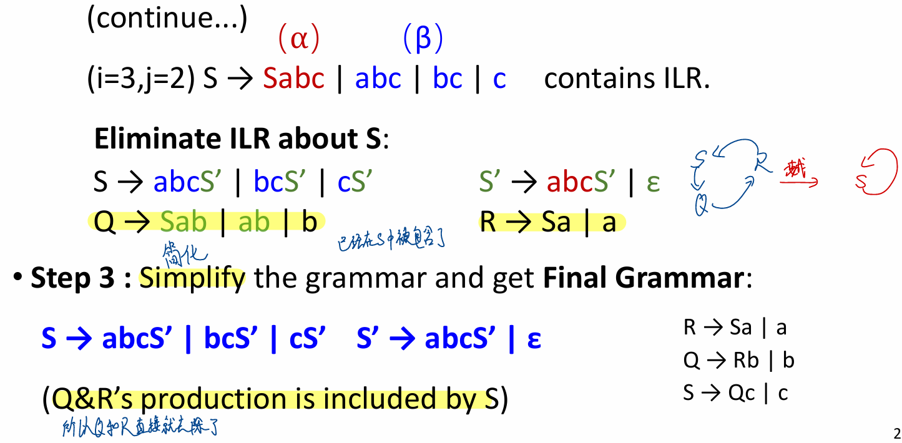
RDP 一定要解决左递归问题，除此之外回溯使得性能比较差（需要穷举）。
为了解决回溯，所以引入了带预测的分析 LL(k)。
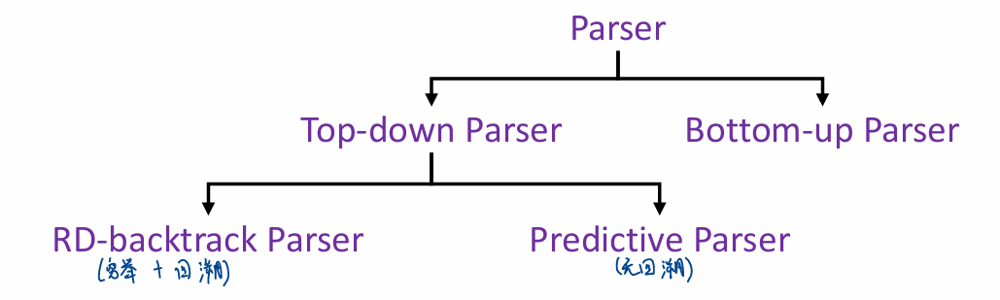
带预测分析
通过向前看一步输入符号，预测正确的产生式。
RDP 是随机选择产生式。
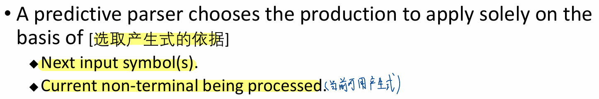
但是会有共同前缀的问题。
共同前缀
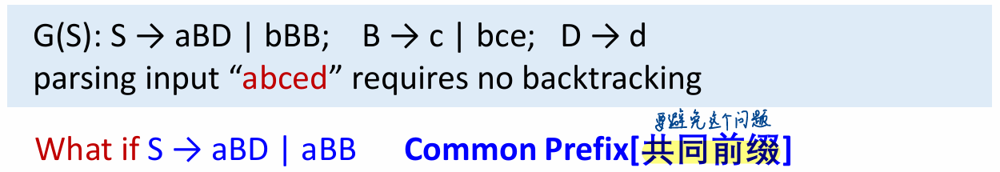
共同前缀可能会导致回溯，因为可以选择多个产生式了。
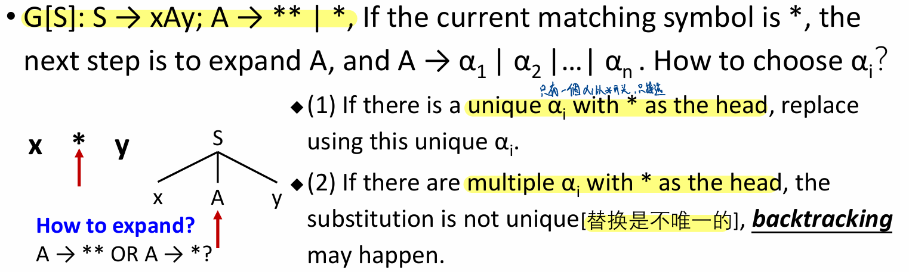
可以使用提取左公因子来解决这个问题：
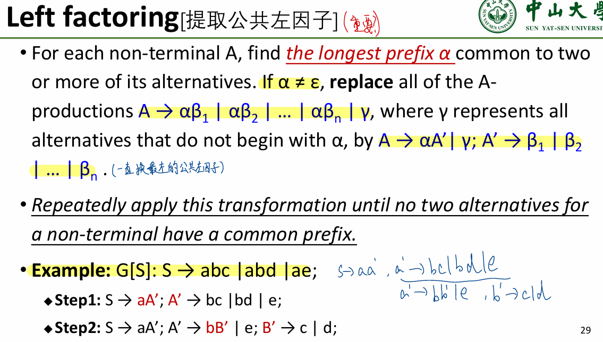
虽然带预测分析解决了 左递归问题 和 共同前缀问题，但是仍然可能避免不了 回溯，例如以下情况：
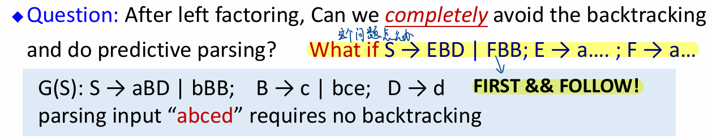
值得一提的是，RDP 是可以处理共同前缀的。
First 集合（重点）
对于任意串 α（可以是终结符串、非终结符串或混合），FIRST(α) 是所有可以出现在 α 推导出的字符串开头的终结符的集合。
- 形式定义：
$$ \text{FIRST}(\alpha) = \{ a \in V_T \mid \alpha \Rightarrow^* a... \} $$
- 如果 α 能推出空串 ε，那么 ε 也属于 FIRST(α)。
计算公式如下：
Follow 集合（重点）
记得没有空串，记得开始符号有
$。
对于某个非终结符 A，FOLLOW(A) 是所有能直接跟在 A 后面出现在某些推导句型中的终结符号的集合。
- 形式定义：
$$ \text{FOLLOW}(A) = \{ a \in V_T \mid S \Rightarrow^* \alpha A a \beta \} $$
- 如果 A 是句子的最右符号，则 $（表示输入结束）属于 FOLLOW(A)。
计算方式：
LL(1) 文法
如何判断是 LL(1) 文法：有三个条件
LL(1) 文法也是不能有左递归问题的！因为是自顶向下。
LL(1) 的实现基本如下：
使用LL 预测分析表
栈的开始状态是 开始符号紧跟着结束符号：
考试的时候应该要这样写：
如何判断是不是 LL(1) 文法
如果有以下产生式：A → α|β，需满足：
- FIRST(α) ∩ FIRST(β) = φ
- If ε ∈ FIRST(β)，FIRST(α) ∩ FOLLOW(A) = φ
或者判断它的预测分析表，最多一个空格只能填一个产生式：
LL 可能考的
写个 LL(2) 文法：
S → a A | a B
A → b
B → cb- 输入
ab....时，看第一个a无法确定选 A 还是 B。
- 但若 k = 2，读到前缀
abvsabb就能区分，因此为 LL(2)。
写个 LL(3) 文法：
S → a b c
S → a b d- 两条产生式的 FIRST₁ 集都是
{ a }，冲突 ➜ 非 LL(1)。
- FIRST₂(a b c) = { ab }
- FIRST₂(a b d) = { ab } 仍然相交 ➜ 非 LL(2)。
- FIRST₃(a b c) = { a b c }
- FIRST₃(a b d) = { a b d }
这两个长度为 3 的前缀集合互不相交，且两条产生式都不会推出 ε，所以也不存在 FIRST/FOLLOW 冲突。 ➜ 满足判定条件，因此 G 是 LL(3)。
LL(0) 文法：
不需要看 lookahead 也能够选择哪条，每个非终结符只有一条产生式，甚至这个语言只有一个串。
就是开始符号直接推：（只有 a b c 这个串）
S → a b c考试可能这样考：
如何判断一个文法是 top-down 的： RDP 可以处理共同前缀的情况，LL 和 预测分析不能。
自底向上分析
是最左归约（最右推导）的。
不需要再考虑 共同前缀 和 左递归 的问题。
| 术语 | 含义 |
|---|---|
| Shift（移进） | 将输入串中的符号压入栈中（表示“尚未归约”的一部分） |
| Reduce（归约） | 将栈顶的符号替换成某条产生式的左部 |
| Stack | 存放中间符号（推导中的状态） |
| Input buffer | 存放剩余输入串 |
示例如下：
句柄
Right-Sentential Form（最右句型）
- 定义：在最右推导、中出现的中间句型。
- 例子：
- 若产生式为：
E ⇒ T ⇒ T * F ⇒ T * id ⇒ F * id ⇒ id * id（最右每次替换最右边非终结符） - 这些每一步的中间结果，都是最右句型。（包括
E和id * id） - 最左句型和最右句型不一样。
Phrase（短语）
- 定义：若
α₁Aα₂是一个最右句型，且S ⇒* α₁Aα₂ ⇒ α₁βα₂，则β是α₁Aα₂的短语（phrase）。 - 中文理解：有某个非终结符 A 展开得到 β，这个 β 就是 A 对应的短语。
- 就是一棵语法树的子树的叶子节点。
Simple Phrase（直接短语）
- 定义：在上面的推导中，若
S ⇒* α₁Aα₂ ⇒ α₁βα₂是一步推导（即 A → β 只用了一步），则 β 是α₁Aα₂的直接短语（simple phrase）。 - 语法树上“父子两代”的子树。
Handle（句柄）
- 定义：一个句型中最左边的直接短语。
- 中文理解：句柄是能被立即规约回一个非终结符的那段符号串，而且是最左边的一个直接短语。
示例如下：
句柄就是在栈顶的时候一定要归约的。
活前缀
什么是 Viable Prefix（活前缀）？
- 定义：viable prefix 是某个最右句型的前缀，它不能超过该句型中最右句柄（handle）的结尾。
简化记忆：“可行前缀 = 包含句柄但不能越过它的前缀” 定义好了句柄前栈的可能状态。
- 确保栈总是包含活前缀。
举个例子，比如 E+E*E 归约成 E+E，句柄是 E*E，那么它的活前缀就是 E、E+、E+E、E+E*、E+E*E。
又比如id+id*id归约成E+id*id，句柄是最左边的id，那么它的活前缀是id，因为不能超过句柄。
冲突
如果文法有二义性的话，可能会有 Shift-Shift 和 Shift-Reduce 冲突。
LR(0) 文法
- 栈中的内容 + 剩下的输入串，构成一个右句型（right sentential form）。
- 栈中不仅有文法符号，还有状态信息，用于记住当前分析进度。
- LR(k) 和 LR(q) 的区别就是 Action 和 Goto 表的区别。
动作表
可能的动作如下：
跳转表
归约后找状态用的。
一些可能的操作：
示例如下：
其他 LR 文法
LR(0) 最弱，SLR(1) 只看一个符号（利用follow），LALR(1)，LR(1) 最强。
项目 (item)
状态其实就是 项目 的集合。
项目的意义：
示例：
增广文法
LR(0) 自动机
示例：
构造 LR(0) 自动机
首先，需要先构造 LR(0) 状态集。
然后计算所有状态的集合和所有边：
示例结果如下：
- 因为 LR(0) 归约的时候没有 lookahead，所以每个状态的 reduce 都是全部一起的。（就是到了这个状态直接归约）
- 在 LR(0) 的分析表中，每个状态要么是 shift 状态，要么是 reduce 状态，不能两者都有。
- 如果文法中存在形如
A → ε的产生式（即 A 可推导出空串），那么对应的 LR 项A → ·ε会在构造分析表时，与其它 A 的非空产生式冲突，从而造成 shift/reduce 冲突。
A → ε
A → aA → ·ε是 reduce 项（代表可以归约 A）A → ·a是 shift 项（代表期望读入 a）
LR(0) 冲突
LR(0) 可能会考的
问你预测分析表有多少行（状态数量），多少列（action 是所有终结符($)，goto是非终结符）。
SLR(1)
对比 LR(0) 的归约，会看看下一个 token 是不是在归约后的 Follow 集合中。
SLR(1) 文法
SLR(1) 局限性
示例如下：
Follow 集合的信息还是太空泛了。
没有利用到栈内的信息，所以引入 LR(1)。
LR(1)
在 LR(0) 的基础上，增加了 lookahead。
LR(1) 状态创建
- 记得 b 属于 first(va)。
- 移进项目的lookahead没有任何作用，仅用作传递。
- 对归约项目起作用。 • 判断输入的1个lookahead能否跟随栈中的活前缀，比SLR(1)更加精确。
示例：
LR(1) 冲突
LR(1) 局限性
LR(1) 的状态数量太多了（因为使用lookahead对状态进行了细分），LR(0) 和 SLR(1) 的状态数量是一样的，所以希望减少 LR(1) 的状态数量，做了一个折中处理，引入了 LALR(1)。
LALR(1)
找到相似的状态（即项目一样，但是lookahead不一样）进行合并，把 lookahead 集中到一起。
示例如下：
LALR(1) 问题
可能会引入 reduce-reduce (r-r) 冲突
- 原始的 LR(1) 分析器使用 lookahead 符号 来精确区分什么时候进行归约（reduce）。
- LALR(1) 会将若干个 LR(1) 状态（它们具有相同的核心项）合并为一个。
- 合并后多个不同的 lookahead 被混在一起 → 有可能导致：
- 同一个状态中出现 两个不同的完整项（A→α· 和 B→β·）
- 而且它们的 lookahead 符号有交集，产生 reduce-reduce 冲突。
LR 是通过不同的 lookahead 来“划分” Follow 集，避免冲突 而 LALR 合并状态后，这种区分被“取消”了
不会引入：shift-reduce (s-r) 冲突
合并状态会推迟错误检测
- 在 LR(1) 分析器中，由于状态区分精细，当输入出错时可能 尽早发现错误。
- LALR 合并后，parser 可能会：
- 由于误归约或多归约，延后发现输入串有问题
- 它可能在错误的路径上多执行几步归约（reduce）操作
LALR(1) 预测分析表构造
高效方式（Efficient Way） 避免一开始就构造完整的 LR(1) 状态，边构造边合并（on-the-fly merging）。
- 状态构造过程仍然使用 LR(1) 的推导逻辑。
- 一旦构造出一个新状态，就立即检查有没有其他核心相同的状态可以合并。
- 核心相同 = 项目中点号（·）所在位置一样，只是 lookahead 不同。
LALR(1)
LALR(1) 的状态数量和 SLR(1) 和 LR(0) 一样多，但是归约的次数更少。
语法分析题目
第六个ppt的最后有答案
语义分析
语义分析的目标是带标注的抽象语法分析树。
语法分析只是检查形式上有没有问题，语义则是检查意义。
例如：数组下标越界就是一个语义问题。
语法制导翻译
翻译是依据程序的文法结构进行的。即根据上下文无关文法（CFG）来指导程序的语义分析与中间代码生成。
语法分析过程构造出语法树，然后在语法树的基础上执行语义分析或翻译（如生成中间代码）。
我们给语法符号（终结符或非终结符）附加语义属性，并为每条产生式规则定义“语义规则”。
SDD 和 SDT
SDD 语法制导定义
SDT 语法制导翻译
之间的区别：
SDD
文法符号中有 综合属性 和 继承属性：
- 终结符可以有综合属性。
- 终结符无继承属性。
产生式中的依赖图如下：
依赖图
依赖图需要无环才能够给自动机自动处理。
示例如下：
为了避免依赖图有环，所以引入了属性文法。
属性文法
综合属性文法：就是所有的属性都是综合的。
适合与自底向上的语法分析同时进行。
左属性文法：每个属性只能从左侧传来（即依赖图只能从左往右，没有回头路）
可以用 LL 或者 LR 来实现。
示例如下：
SDD 实现
综合属性实现
在 LR 的基础上进行修改实现：扩展栈，额外放属性值即可。
示例如下：
左属性文法实现
示例如下：
如果文法是 LL 可解析的：就可以在 LL 或 LR 分析过程中 实现 L-SDD 的语义动作（SDT）。
可以有三种方法实现左属性文法：
- RDP
- LL
- LR
在使用自顶向下的方法时，一定要先消除左递归！
消除左递归
示例如下：
公式如下：
RDP 实现左属性文法
把继承属性当成函数参数，综合属性当成返回值即可。
LL分析 实现左属性文法
通过扩展语法分析栈来实现。
先压综合属性，再压继承属性。
- 为什么先压综合再压继承：因为假设 A定义为BC，需要把 A 的继承先 pop 出去，再把BC压进来，这个时候因为已经有记录 A 的继承值，所以B和C的继承属性都可以计算，当B和C的属性都计算好之后弹出栈，那么也代表 A 的综合属性可以算了。
LR分析 实现左属性文法
使用 Marker 技术来实现，将 L-SDD 转换成 S-SDD。
示例如下：
符号表
其实就是保留用户的定义。
符号表是用来存储和查询程序中所有符号（标识符）相关信息的数据结构。
编译的阶段中用到符号表：
- 词法分析阶段：发现新的标识符，加入符号表
- 语法分析阶段：检查标识符是否已经声明过（查符号表）
- 语义分析阶段：做类型检查，变量作用域判断（用符号表）
- 中间代码生成 / 优化 / 目标代码生成：用符号表信息分配内存地址、生成指令
符号表的访问会严重的影响前端的性能！
符号表可以有三种实现方式：
- 数组
- 链表
- 二叉树
- 哈希表
类型检查
- 静态类型检查：在编译时进行类型检查，类型错误在程序运行前就会被发现。
- 动态类型检查：在运行时进行类型检查，类型错误在程序执行时才会被发现。
| 特性 | 静态类型检查 (Static) | 动态类型检查 (Dynamic) |
|---|---|---|
| 检查时机 | 编译时（编译器检查类型） | 运行时（解释器/VM检查类型） |
| 错误发现早晚 | 运行前发现（较早） | 运行中才发现（可能很晚） |
| 执行效率 | 通常更高（类型已知） | 通常稍慢（运行中要做类型判断） |
| 代码安全性 | 更强（类型问题在编译时就能暴露） | 较弱（要依赖运行时测试） |
| 灵活性 | 较低（变量类型必须事先指定） | 更高（变量类型可改变） |
| 典型语言 | C, C++, Java, Rust, Go | Python, JavaScript, Ruby, PHP |
| 变量声明 | 需显式声明类型（如：int x = 5;） | 通常不需要（如：x = 5） |
语义分析题目
中间代码生成
重点：计算数组引用，TAC的三种表达，SSA是什么，布尔表达式回填。
常见的中间代码表示有：TAC，AST，DAG。
中间代码分成了三个层级，高层级代表靠近源语言，与源语言相关；中层级代表跟源语言和机器语言都不相关；低层级代表靠近机器语言，与机器码相关。
为什么要多层级中间代码呢
实际上，也可以只有一个中间代码：AST，从 AST 直接到机器码（事实上，Java 就是这么干的）。
但是这样会丧失很多代码优化的机会，以及多层级的中间代码表示可以把整个逻辑分的更清晰，特别是易于修改或者扩展。
TAC 三地址码
最多只能三个操作数：X = Y op Z。
示例如下：
可以分成四元式、三元式、间接三元式。
四元式
一共有四个参数要填：操作符、操作数1、操作数2、结果数。
三元式
是对四元式的一个精简，去掉了结果这个参数，用下标表示结果。
三元式有个问题，当需要优化三地址码的时候，三元式内的指令需要不停的迭代的变更。
间接三元式
SSA
将变量变得跟常量一样，所有变量只用一次。
SSA 可以帮助数据流更加的清晰，更容易发现死代码。
代码生成
有以下几个工具函数：
以下有一个赋值的例子：
数组引用
给你一个数组和下标要会算地址。
还有这个更加复杂的例子：
布尔表达式
控制流语句
回填
有个问题：我现在要生成跳转指令，但还不知道将来要跳去哪里。
有时候需要往前跳转，但是还未生成到那个部分的指令，就先挖个洞，之后生成了再补上。
代码优化
重点：DAG，basic block，本地优化，活性变量，去除死代码。
优化目标：
优化的目的不是“越复杂越好”，而是提升实际性能，主要包括：
- Execution time（执行时间）：让程序跑得更快。
- Memory usage（内存使用）：减少内存占用。
- Energy consumption（能耗）：在嵌入式/移动平台尤其重要。
- Binary executable size（二进制文件大小）：让最终程序更小。
优化应遵循的三大原则：
- Equivalence（等价性）
- Efficiency（效率）
- Cost-effectiveness（性价比）
优化可以分为布局相关和代码相关。
布局相关
主要使用空间局部性
例子1：
例子2：
例子3：
代码相关
目标：尽量让代码用更少昂贵的指令。
就是让代码尽量少点，在功能相同的情况下。
有控制流分析 (CFA) 可以生成 CFG，数据流分析 (DFA) 可以生成 DFG。
Basic block
一串没有分支跳转的连续代码序列，可以理解成一个原子操作。
基本块是 CFG 的节点。
- 局部优化是优化的作用范围局限在一个基本块（basic block）内。
- 全局优化是优化会跨越多个基本块进行分析和修改。
构造 CFG
步骤1：
步骤2：
示例如下：
本地优化
常见的方法有：删除公共子表达式，死代码消除。
也可以用代数恒等式和强度低的指令进行优化：
常量折叠和常量传播：
构造 DAG
示例如下：
创建完 DAG 之后，可以进行代码消除：
全局优化
全局优化必须覆盖所有路径
- 哪怕只有一条路径上优化会导致结果出错，也不能做。
- 必须沿所有路径成立，才能优化。
保守性
- 编译器要做全局优化时，必须能证明某个性质 X 在所有路径上成立。
- 如果不能确定（分析结果为 "don’t know"），则不做优化。
- 即使会错过优化机会，也必须保证结果仍然正确。
全局常量传播
观察每一条路径上的变量的值，并且进行传播：
示例如下：
示例如下：
DAG 构造例子
目标代码生成
给指令问开销，要知内存布局，stack，heap放什么，实际是用 fp 去找栈中地址。
实际上就是转优化后的中间代码 变成 目标代码。
三个主要目的：
- 如何选取指令（强度减弱）
- 如何分配寄存器
- 如何确定指令执行的顺序
内存布局
Code 区段（代码段）
- 包含程序的机器指令。
main()函数的代码f()、g()等函数体- 特点：
- 编译时大小已知
- 通常放在地址空间的低地址区域
Global/static（数据段）
- 存储全局变量和静态变量
- 特点：
- 编译时就确定大小
- 生命周期与程序一样长
- 初始化变量放在
.data区
Heap（堆区）
- 动态内存分配区域（比如
malloc,new） - 用于存储生命周期较长的对象或数组
- 由程序员或垃圾回收器控制
Stack（栈）
- 存放函数调用时的局部变量、返回地址、参数等
- 特点：
- 后进先出（LIFO）
- 每次调用函数会压栈，返回后出栈
活动管理
活动被定义为执行一次函数调用。
AR 栈式管理方式（如同栈一样管理）
- 函数调用时：
- 分配一个新的 AR（活动记录）到栈顶。
- 函数返回时：
- 从栈顶移除该 AR。
- 所以活动记录以栈的形式（先进后出）组织。
还有 fp 和 sp 一些硬件辅助。
调用函数的过程
一、调用前（由 caller 调用者 执行）：
- 为调用做准备：
- 在栈上分配空间，用于保存任何 caller-saved 的寄存器。
- 压入实参（arguments）：
- 从右到左压入实参到栈中（右→左）。
- 跳转到被调用函数地址：
- 将下一条指令地址（即函数返回点）保存到
$ra（return address 寄存器）。 - 跳转到被调用函数的入口。
二、函数执行中（由 callee 被调用者 执行）：
- 为当前调用帧分配空间：
- 保存当前
$fp（frame pointer）和$ra到栈中。 - 配置帧指针：
- 设置
$fp为当前栈帧的基址（新的 AR 起点）。 - 继续分配栈帧空间：
- 为局部变量、临时变量分配空间。
- 执行函数体代码：
- 使用
$fp作为基准访问变量： - 参数用正偏移（positive offset）
- 局部变量/临时变量用负偏移（negative offset）
三、函数返回时（由 callee 被调用者 执行）：
- 处理返回值：
- 将返回值赋给
$v0（返回值寄存器）。 - 恢复上下文并返回：
- 弹出栈帧（包括局部变量、临时变量、保存的寄存器）。
- 恢复
$fp和$ra。 - 跳转到
$ra中保存的返回地址（即 caller 的下一条指令）。
示例如下：记得看如何访问参数（利用 FP）。
示例如下：记得先压 FP 再压 IP，并且新的 FP 是指着 IP 的。
访问函数参数时，利用 FP 进行位移，函数参数通常是 FP + 4 或者 FP + 8，函数内的临时变量一般是FP - ...
指令成本
示例如下：